Aile VIII — Galerie 25
Animaux de la terre
Job 12:7-8
13 merveilles illustrées, chacune avec sa reconstitution numérique et ses références scientifiques. Leur vérification détaillée se poursuit.
Choisir parmi les huit galeries
Écouter la galerie
Lire la transcription
Bienvenue dans la galerie des animaux de la terre. Des forêts aux déserts, les êtres vivants rencontrent des défis très différents. Ils doivent trouver leur nourriture, percevoir leur environnement, se déplacer et conserver leur énergie. Regardons la trompe de l'éléphant. Elle peut saisir, sentir et aspirer. Dans une étude, des chercheurs ont observé une éléphante et mesuré plusieurs prises d'eau. Ces mesures concernent cet animal et ces essais : elles ne résument pas toutes les trompes, ni toutes les situations. Le chien explore les odeurs autrement. La forme de ses voies nasales et les mouvements de l'air contribuent à acheminer les molécules odorantes. L'odorat dépend toutefois aussi du comportement, de l'apprentissage et des conditions du milieu. Chez le chat, les vibrisses sont des capteurs tactiles. Leur forme et leur implantation permettent de transmettre des informations mécaniques, mais aucune vibrisse ne fonctionne comme une règle universelle adaptée à tous les animaux. Le cheval peut se reposer debout grâce à un ensemble de structures qui contribuent à stabiliser ses membres. Des expériences sur des membres isolés éclairent certains de ces mécanismes ; elles ne décrivent pas à elles seules le sommeil d'un cheval vivant. Enfin, la fourrure de la loutre emprisonne de l'air et participe à son isolation. Lorsqu'elle est souillée, cette protection peut être compromise. La diversité de ces exemples nous invite à observer chaque animal dans son environnement, plutôt qu'à tirer des conclusions générales. Pour aller plus loin, ouvrez les fiches et leurs sources. Les observations, les modèles et les applications ne répondent pas aux mêmes questions. Les chiffres dépendent des espèces et des conditions étudiées. Lorsque les chercheurs hésitent encore, cette incertitude mérite d'être dite. Bonne visite, et prenez le temps d'observer.
La même oreille, inventée deux fois
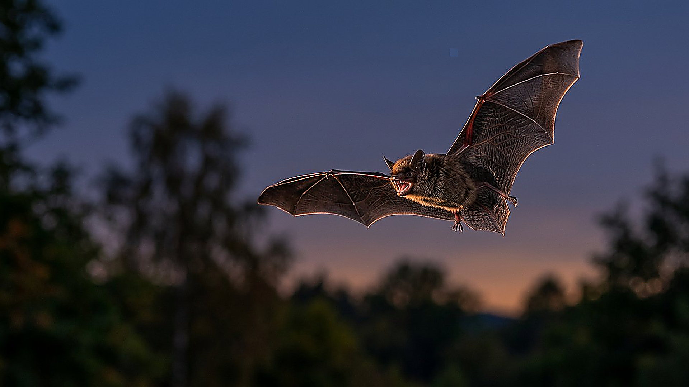
La merveille
Une chauve-souris qui chasse de nuit et un dauphin qui chasse en eau trouble partagent un exploit : voir par les échos. Leurs sonars sont apparus séparément — et pourtant le gène de l'ouïe fine, prestin, porte les mêmes retouches dans les deux lignées : une convergence lisible dans la séquence même.
Comment ça marche
Les chauves-souris écholocalisatrices et les dauphins écholocalisateurs présentent des substitutions convergentes du gène prestin : dans l'arbre de ce gène, ils se regroupent malgré leurs parentés distinctes, signe d'une pression de sélection commune pour l'ouïe à hautes fréquences.
- 2 lignées indépendantes (chauves-souris, cétacés) dotées d'un sonar
- 1 gène de l'ouïe convergent : prestin
- 2 010 année de la démonstration moléculaire de la convergence
Ce que l'homme en tire
Sonars et ultrasons bio-inspirés, conception de microphones directionnels : recherche ; aucun sonar artificiel n'égale encore la souplesse du vivant.
Statut : RECHERCHE
Le saviez-vous ?
Deux inventions séparées peuvent-elles se ressembler jusqu'à l'atome ?
Oui : quand le problème est le même — mesurer des échos ténus — la sélection peut retravailler la même pièce moléculaire. La convergence de prestin en est un cas d'école, documenté séquence par séquence.
Réflexion
Job 12:7-8
Deux nuits différentes, une même solution : écouter le retour du monde.
Sources
- Liu Y., Cotton J.A., Shen B., Han X., Rossiter S.J., Zhang S. (2010), « Convergent sequence evolution between echolocating bats and dolphins », Current Biology 20:R53–R54 — DOI 10.1016/j.cub.2009.11.058
Voir aussi
La chauve-souris et le temps des échos L'oreille qui entend jusqu'à 300 kHz
Le barrage qui se voit de l'espace
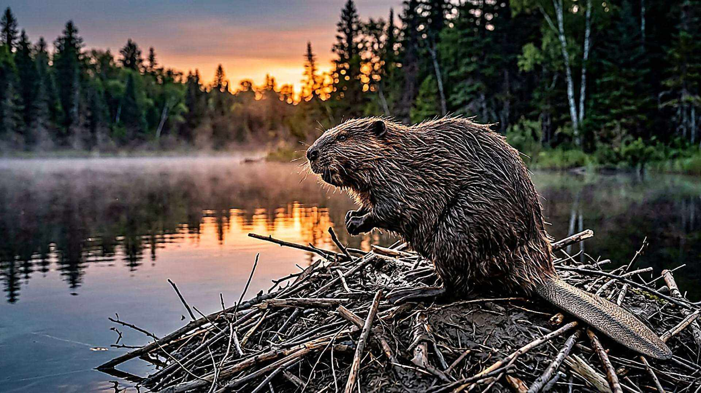
La merveille
Dans le parc Wood Buffalo, un barrage de castors s'étire sur environ 850 mètres : assez long pour être repéré sur des images satellite. Ce n'est pas l'œuvre d'une famille mais de plusieurs générations de bâtisseurs, qui ont fusionné leurs étangs en un seul ouvrage.
Comment ça marche
Les castors coupent, transportent et empilent bois, pierres et boue pour retenir l'eau ; l'étang ainsi créé protège leurs huttes et transforme tout l'écosystème. Les grands complexes se cartographient aujourd'hui par imagerie satellite et modèles de reconnaissance (EEAGER).
- 850 m longueur du plus grand barrage connu (Alberta, record daté 2007-2010)
- 70 000 m² surface environ de l'étang retenu
- 1 990 année où le barrage apparaît déjà sur les images Landsat
EXPLORATION INTERACTIVE · 3 ÉTAPES
Découvrir un barrage de castors
Choisissez une étape pour en découvrir le rôle. Cette séquence est une représentation pédagogique, non une simulation quantitative.
Utilisez les touches fléchées pour changer d’étape au clavier.
Ce que l'homme en tire
Les « analogues de barrages de castors » servent à restaurer des zones humides et des ruisseaux dégradés : pratique de génie écologique en usage.
Statut : EN PRODUCTION
Le saviez-vous ?
Pourquoi bâtir si long ?
Chaque famille défend son étang ; quand les territoires se touchent, les ouvrages finissent par se rejoindre. Le barrage géant n'est pas un projet : c'est une addition de projets, génération après génération.
Question honnête
Le chiffre de 850 m vient d'observations satellite et d'un survol de confirmation (2007-2010), pas d'une étude de terrain publiée : le record est daté et sourcé comme tel.
Réflexion
Job 12:7-8
Un chantier sans architecte, plus long que bien des ponts.
Sources
- Fairfax E., Zhu E., Clinton N., Maiman S., Shaikh A., Macfarlane W.W. et al. (2023), « EEAGER: A neural network model for finding beaver complexes in satellite and aerial imagery », J Geophys Res Biogeosciences — DOI 10.1029/2022JG007196
Voir aussi
Une onde de fuite dans un banc La gouttière qui trie les liquides
Le cœur qui grimpe à deux mètres
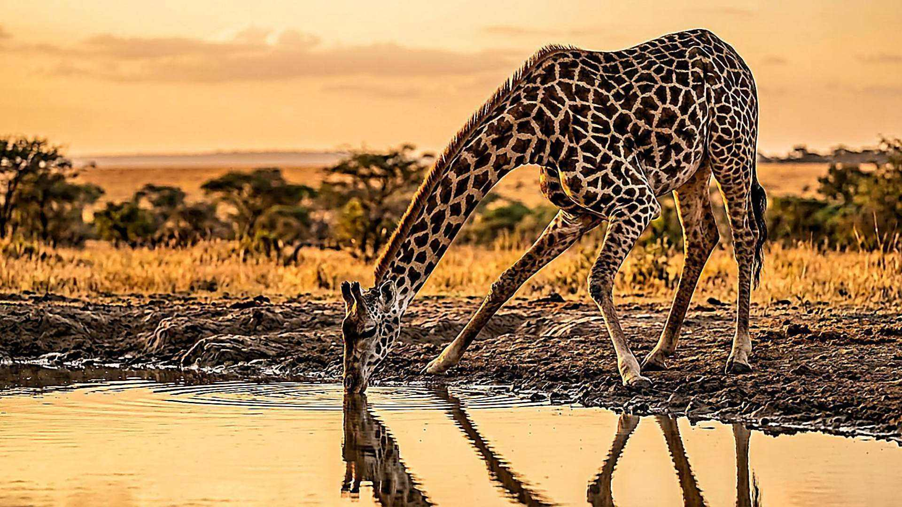
La merveille
Quand une girafe relève la tête, son cerveau se trouve à plus de deux mètres au-dessus de son cœur. Pour que le sang monte quand même, sa pompe travaille à une pression qui écraserait celle de presque tous les mammifères : environ 224 mmHg mesurés in vivo.
Comment ça marche
La pression artérielle moyenne résulte de la colonne hydrostatique du cou : chaque mètre de hauteur exige environ 77 mmHg de plus au niveau du cœur. Le ventricule gauche, à paroi épaissie, normalise la tension pariétale ; veines jugulaires collabables et réseau admirable protègent l'encéphal quand la tête redescend.
- 224,0000000 mmHg pression artérielle moyenne mesurée in vivo (± 7)
- 2 m hauteur environ du cerveau au-dessus du cœur
- 77 mmHg pression supplémentaire par mètre de colonne de sang
Ce que l'homme en tire
Bas de contention, combinaisons anti-G, protections cardiovasculaires : les solutions de la girafe inspirent prototypes et équipements.
Statut : PROTOTYPE
Le saviez-vous ?
Pourquoi la girafe ne s'évanouit-elle pas en baissant la tête ?
Parce que le retour veineux est amorti : jugulaires collabables, valvules et réservoirs veineux évitent que le sang ne reflue d'un coup vers le crâne. Le vertige n'est pas une option.
Réflexion
Job 12:7-8
Une plomberie qui défie la gravité, sans pompe de secours.
Sources
- Smerup M., Damkjær M., Brøndum E. et al. (2016), « The thick left ventricular wall of the giraffe heart normalises wall tension, but limits stroke volume and cardiac output », Journal of Experimental Biology 219:457–463 — DOI 10.1242/jeb.132753
- Aalkjær C., Smerup M. et al. (2025), « Hemodynamics and Drinking in the Giraffe », Acta Physiologica — DOI 10.1111/apha.70046
Voir aussi
Quatre places qui se consultent Le cheval qui se repose debout
La trompe, un outil qui aspire
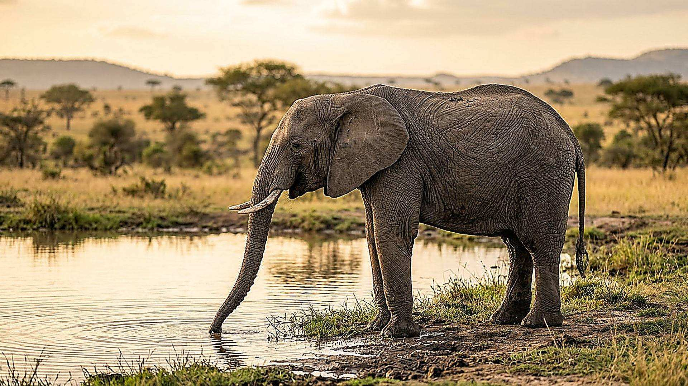
La merveille
La trompe de l’éléphant d’Afrique (Loxodonta africana) peut saisir des objets ou aspirer de l’eau. En observant une femelle au zoo, des chercheurs ont mesuré l’aspiration de liquide et filmé la prise de petits aliments.
Comment ça marche
L’éléphante aspire l’eau dans les conduits de sa trompe, puis peut la porter à sa bouche. Lors de trois essais, le débit moyen était de 3,7 litres par seconde pendant environ 1,5 seconde, soit environ 5,5 litres en tout. L’échographie a aussi montré un élargissement des conduits nasaux. Une vitesse d’air de l’ordre de 150 m/s a été calculée dans un modèle distinct de prise d’aliments, non mesurée pendant l’aspiration d’eau.
- 3,7 L/s débit moyen d’eau pendant trois essais sur une éléphante
- 1,5 s durée moyenne des aspirations d’eau observées
- 5,5 L volume moyen d’eau aspirée lors de ces essais
- 64 % augmentation maximale estimée du volume nasal lors de l’étude
Ce que l'homme en tire
La combinaison de souplesse, de préhension et d’aspiration nourrit des pistes de recherche en robotique. L’étude décrit le comportement de l’animal et des modèles physiques ; elle ne démontre pas à elle seule une pince industrielle issue de cette trompe.
Statut : RECHERCHE
Le saviez-vous ?
L’éléphant aspire-t-il directement l’eau dans ses poumons ?
Non : la trompe recueille l’eau, qui est ensuite transférée vers la bouche. Le fonctionnement précis de sa protection interne reste à étudier.
Question honnête
Les expériences ont porté sur une seule femelle en captivité et sur une trompe de spécimen mort pour certaines dimensions. Les valeurs ne sont pas des records universels ; la vitesse de l’air est une estimation fondée sur un modèle.
Réflexion
Job 12:7-8
Un même organe souple peut approcher, saisir et aspirer.
Sources
- Schulz A. K., Wu J. N., Ha S. Y. S., Kim G., Braccini Slade S., Rivera S., Reidenberg J. S. et Hu D. L. (2021), « Suction feeding by elephants », Journal of the Royal Society Interface 18:20210215 — DOI 10.1098/rsif.2021.0215
Voir aussi
Le chien qui échantillonne les odeurs Quatre places qui se consultent
Le corps qui descend sous zéro
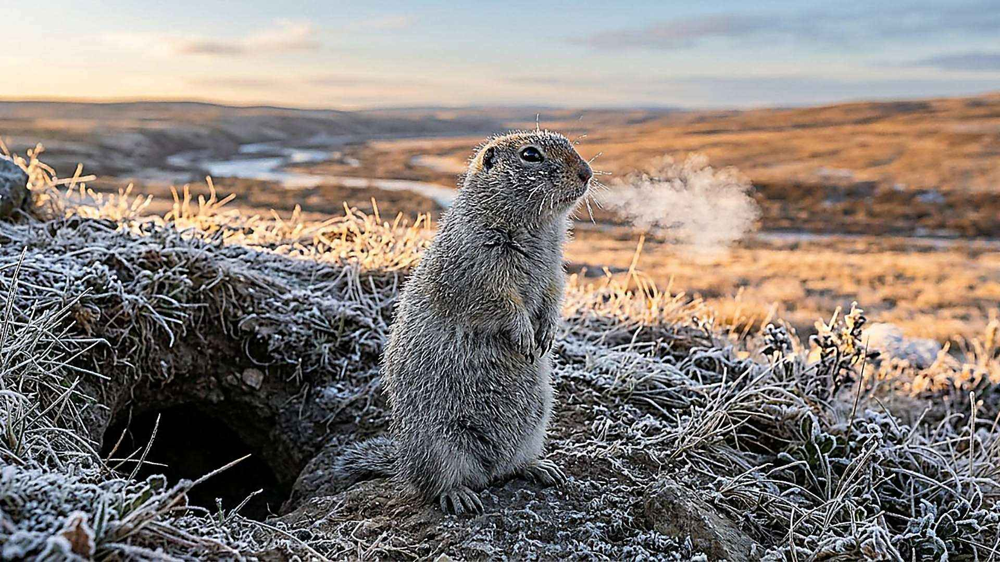
La merveille
En hibernation, le spermophile d'Alaska laisse sa température centrale glisser jusqu'à environ −2,9 °C : un mammifère, dont le sang devrait geler, reste liquide et se réveille ensuite de lui-même. Sans molécule antigel : en surfusion maîtrisée.
Comment ça marche
Le petit mammifère abaisse son métabolisme et maintient ses fluides en surfusion : aucun cristal de glace ne s'amorce, malgré des températures inférieures au point de congélation ; des réveils périodiques rythment l'hiver.
- -2,9 °C température centrale atteinte sans geler
- 0 molécule antigel : la surfusion suffit
- 1 record de froid parmi les mammifères étudiés
Ce que l'homme en tire
Conservation d'organes et de tissus sans glace, médecine de l'hibernation : recherche active.
Statut : RECHERCHE
Le saviez-vous ?
Geler sans mourir, est-ce la même chose ?
Non : la grenouille des bois tolère la glace dans ses tissus ; le spermophile, lui, l'évite entièrement par surfusion. Deux stratégies opposées pour le même hiver.
Réflexion
Job 12:7-8
Un sommeil plus froid que la glace, sans une seule glace.
Sources
- Barnes, B.M. (1989), « Freeze Avoidance in a Mammal: Body Temperatures Below 0°C in an Arctic Hibernator », Science 244(4912):1593-1595 — DOI 10.1126/science.2740905
Voir aussi
Le chœur qui alterne dans la rizière La fourrure qui garde l'air
La langue qui démêle et humidifie le pelage
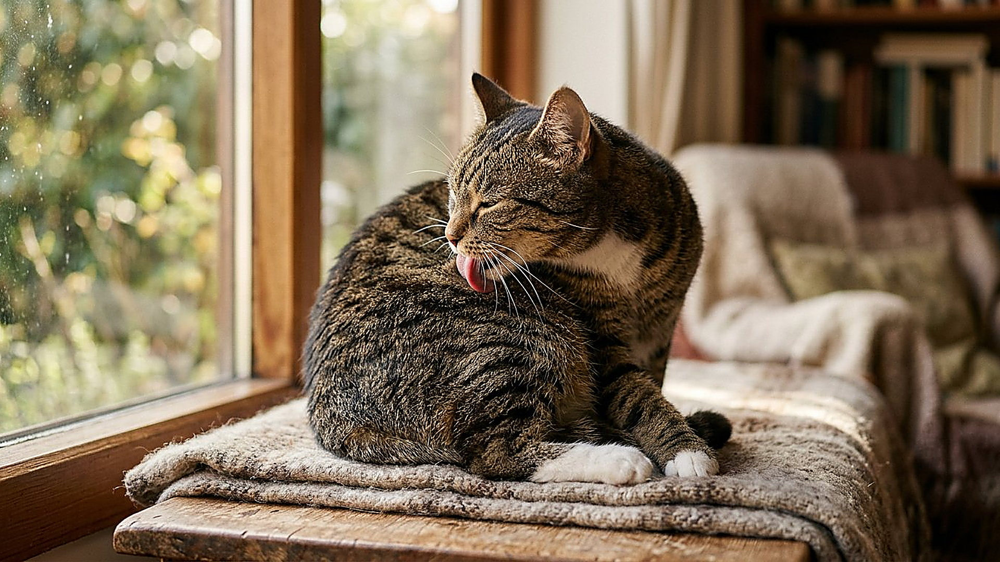
La merveille
La langue du chat domestique Felis catus ressemble à une brosse miniature. Pendant la toilette, des papilles rigides orientées vers l’arrière pénètrent dans le pelage. Leur extrémité creuse recueille un peu de salive et la dépose entre les poils.
Comment ça marche
En filmant des chats et en examinant des langues de six espèces de félins, deux chercheurs ont observé que certaines papilles possèdent une cavité à leur extrémité. La tension de surface y attire le liquide. Au passage de la langue, ces papilles aident à porter l’humidité plus profondément dans les poils ; le support souple des papilles facilite aussi leur passage dans les nœuds.
- 3 chats domestiques filmés pendant leur toilette dans l’étude
- 6 espèces de félins dont les langues ont été examinées
- 1,4 par seconde fréquence moyenne des coups de langue observée, avec une variabilité de ± 0,6
- 5 % part approximative du liquide des cavités sur une langue mouillée dans l’expérience
Ce que l'homme en tire
Les chercheurs ont fabriqué une brosse expérimentale, dite TIGR, à partir de papilles imprimées en trois dimensions sur une base souple. Dans leurs essais, elle se nettoyait plus facilement et exerçait moins de force qu’une brosse humaine de comparaison. Il s’agit d’un prototype de laboratoire.
Statut : PROTOTYPE
Le saviez-vous ?
La majeure partie du liquide sur la langue se trouve-t-elle dans les papilles ?
Non. Dans une expérience sur une langue mouillée, les cavités n’en contenaient qu’environ 5 %, mais elles permettaient de transporter du liquide en profondeur.
Question honnête
La fréquence a été mesurée sur trois chats à poil court ; elle ne caractérise pas tous les chats. La brosse est un prototype testé dans des conditions précises, non une preuve d’efficacité médicale.
Réflexion
Job 12:7-8
Un geste quotidien révèle des structures que l’on ne distingue presque pas à l’œil nu.
Sources
- Noel A. C. et Hu D. L. (2018), « Cats use hollow papillae to wick saliva into fur », Proceedings of the National Academy of Sciences 115(49):12377–12382 — DOI 10.1073/pnas.1809544115
Voir aussi
Les moustaches du chat : des capteurs tactiles Le chien qui échantillonne les odeurs
Le chien qui échantillonne les odeurs
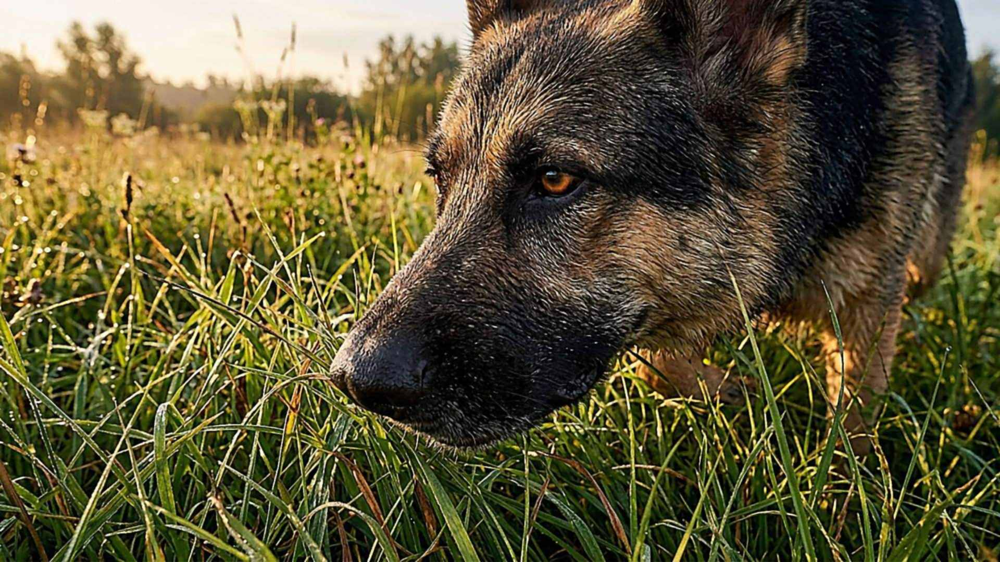
La merveille
Lorsqu’il explore une piste, le chien (Canis lupus familiaris) renifle par inspirations et expirations rapides. Le passage de l’air dans son nez et les jets expirés autour des narines participent à l’acheminement des molécules odorantes.
Comment ça marche
Un cycle de reniflement comprend une inspiration puis une expiration ; une fréquence d’environ cinq cycles par seconde est couramment citée, mais elle varie. Des modèles de l’écoulement suggèrent que les deux narines échantillonnent des régions distinctes de l’air. À l’extérieur, des jets dirigés vers le bas et les côtés peuvent entraîner de l’air vers le nez. Ces descriptions ne signifient pas que tout l’air circule sans interruption dans un seul sens.
- 5 cycles/s fréquence approximative d’un reniflement canin, selon les études citées
- 2 narines échantillonnant chacune l’air autour du nez
- 2 016 année d’une expérience sur un nez artificiel inspiré du chien
Ce que l'homme en tire
En 2016, une équipe a testé en laboratoire un nez artificiel imprimé en trois dimensions et un dispositif de détection modifié pour alterner aspiration et expiration. C’est un prototype de prélèvement inspiré du reniflement, pas un chien artificiel capable de toutes les mêmes tâches.
Statut : PROTOTYPE
Le saviez-vous ?
Pourquoi un chien renifle-t-il par séquences ?
Les cycles renouvellent les échantillons d’air ; l’expiration latérale peut aussi modifier l’air autour du museau et favoriser le prélèvement suivant.
Question honnête
Le comportement dépend du chien, de la tâche et de l’environnement. Les simulations et le nez artificiel simplifient l’anatomie réelle ; ils ne prouvent pas qu’une fréquence fixe ou un flux strictement unidirectionnel existe en toute situation.
Réflexion
Job 12:7-8
Un museau près du sol prélève des indices invisibles dans l’air.
Sources
- Craven B. A., Paterson E. G. et Settles G. S. (2010), « The fluid dynamics of canine olfaction: unique nasal airflow patterns as an explanation of macrosmia », Journal of the Royal Society Interface 7:933–943 — DOI 10.1098/rsif.2009.0490
- Staymates M. E., MacCrehan W. A., Staymates J. L., Kunz R. R., Mendum T., Ong T.-H., Geurtsen G., Gillen G. J. et Craven B. A. (2016), « Biomimetic Sniffing Improves the Detection Performance of a 3D Printed Nose of a Dog and a Commercial Trace Vapor Detector », Scientific Reports 6:36876 — DOI 10.1038/srep36876
Voir aussi
Les portes du sucré et du savoureux La trompe, un outil qui aspire
La limace avance sur un mucus étonnant
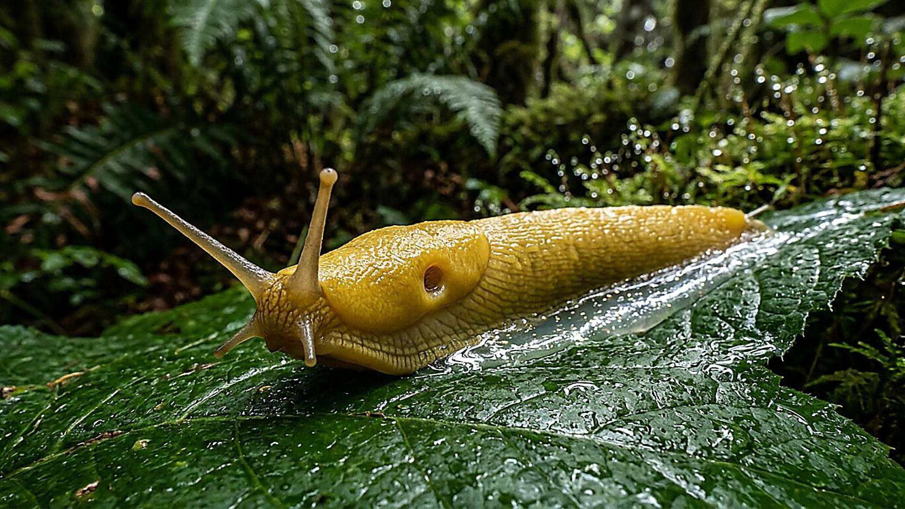
La merveille
Une limace terrestre avance grâce à des ondes musculaires qui parcourent son pied. Entre le pied et le sol, une fine couche de mucus transmet des forces tout en permettant à certaines zones de glisser.
Comment ça marche
Le mucus pédieux présente des propriétés viscoélastiques : sa réponse dépend de la déformation et de la manière dont celle-ci est appliquée. Des chercheurs ont mesuré les forces exercées par des limaces sur une surface souple. Leurs résultats soulignent le rôle du seuil d’écoulement du mucus, mais la manière exacte dont le pied et le mucus produisent la poussée demeure complexe.
- 2 010 année d’une étude mesurant les forces de limaces terrestres en mouvement
- 1 980 année d’une étude classique sur le rôle du mucus pédieux
- 2 fonctions associées au mucus pendant la marche : adhésion et glissement
Ce que l'homme en tire
La locomotion adhésive des gastéropodes inspire des recherches sur des robots souples et des matériaux capables d’adhérer tout en se déplaçant. Ces systèmes ne reproduisent pas nécessairement toutes les propriétés du mucus vivant.
Statut : RECHERCHE
Le saviez-vous ?
Le mucus n’est-il qu’une colle ?
Non. Il contribue à l’adhésion au sol mais peut aussi permettre le glissement de zones du pied, selon les contraintes appliquées.
Question honnête
La nature du mucus et les mouvements du pied varient selon les animaux et les conditions. Les forces mesurées sur surface lisse n’expliquent pas à elles seules tous les déplacements sur des terrains irréguliers.
Réflexion
Job 12:7-8
Sous un mouvement discret, pied et mucus collaborent.
Sources
- Lai J. H., del Alamo J. C., Rodríguez-Rodríguez J. et Lasheras J. C. (2010), « The mechanics of the adhesive locomotion of terrestrial gastropods », Journal of Experimental Biology 213:3920–3933 — DOI 10.1242/jeb.046706
- Denny M. W. (1980), « The role of gastropod pedal mucus in locomotion », Nature 285:160–161 — DOI 10.1038/285160a0
Voir aussi
La chauve-souris et le temps des échos
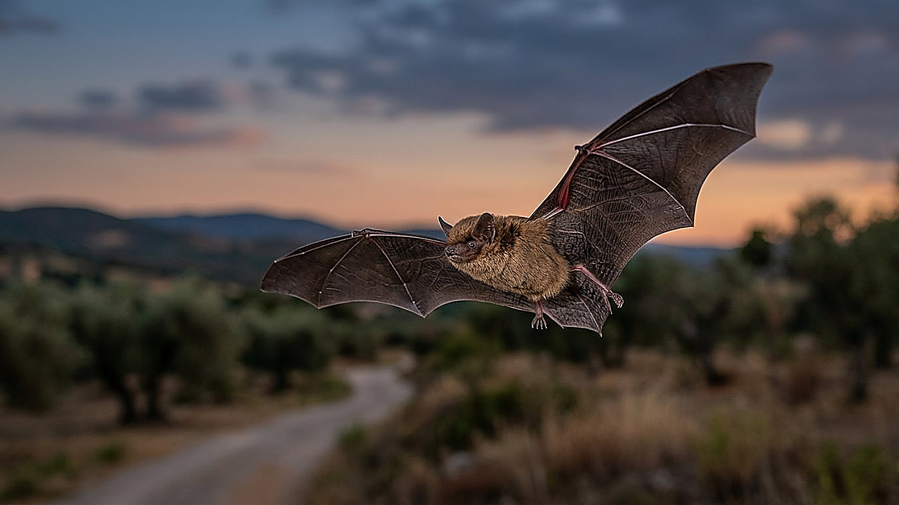
La merveille
Pour se repérer, la pipistrelle de Kuhl (Pipistrellus kuhlii) émet des sons et reçoit leurs échos. En 2021, une expérience a modifié la vitesse du son autour de jeunes et d’adultes : leur comportement a révélé une relation étroite entre le délai de l’écho et leurs préparatifs de vol.
Comment ça marche
Les chercheurs ont élevé six jeunes dans l’air ordinaire et cinq dans un mélange enrichi en hélium, où le son se propageait 15 % plus vite. Dans ce mélange, les échos revenaient plus tôt et les deux groupes se comportaient comme si la cible était plus proche. Les auteurs y voient l’indice d’une référence innée au délai ; ils proposent que ces animaux pourraient utiliser directement le temps plutôt que calculer explicitement une distance.
- 6 jeunes élevés dans l’air ordinaire et testés
- 5 jeunes élevés dans le mélange enrichi en hélium et testés
- 15 % augmentation de la vitesse du son dans le mélange expérimental
- 1,3 m distance de la cible dans l’expérience sur les jeunes
Ce que l'homme en tire
L’écholocalisation inspire des recherches en sonar et en robotique pour repérer des obstacles à partir des échos. L’expérience sur la pipistrelle étudie un comportement animal, pas un capteur artificiel déjà autonome ou calibré de la même manière.
Statut : RECHERCHE
Le saviez-vous ?
Les chauves-souris calculent-elles une distance comme une règle ?
Le délai entre un son et son écho apporte une information liée à la distance. Dans cette étude, les auteurs proposent que les pipistrelles répondent directement au délai plutôt que de convertir explicitement le temps en mètres.
Question honnête
Ces observations concernent une espèce et les conditions particulières d’une chambre expérimentale. Une référence suggérée par le comportement n’est pas la preuve que l’animal connaît consciemment une valeur numérique ni que toutes les chauves-souris fonctionnent de façon identique.
Réflexion
Job 12:7-8
Un écho bref fournit un indice sur un monde que les yeux ne voient pas toujours.
Sources
- Amichai E. et Yovel Y. (2021), « Echolocating bats rely on an innate speed-of-sound reference », Proceedings of the National Academy of Sciences 118:e2024352118 — DOI 10.1073/pnas.2024352118
Voir aussi
La même oreille, inventée deux fois L'oreille qui entend jusqu'à 300 kHz
Le cheval qui se repose debout
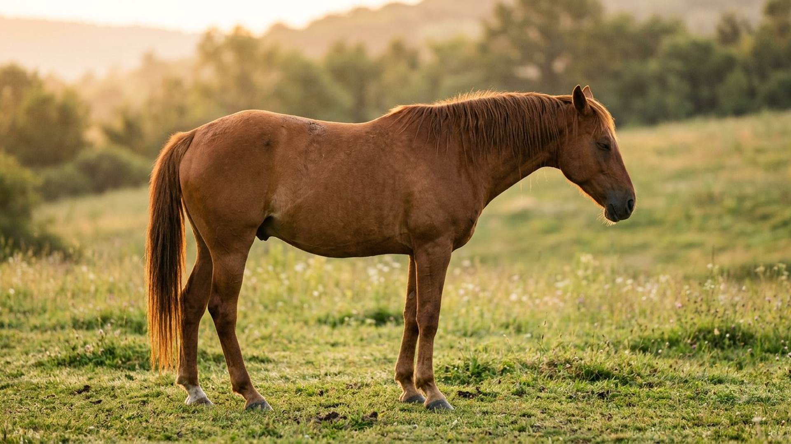
La merveille
Le cheval domestique (Equus caballus) peut se reposer debout. Un ensemble de tendons et de ligaments aide à stabiliser ses membres sous charge et limite l’effort musculaire nécessaire pour rester en position.
Comment ça marche
Dans le membre antérieur, plusieurs tendons et ligaments soutiennent les articulations et limitent leur extension. En 2011, une équipe a chargé des membres antérieurs prélevés pour comparer la réponse de trois groupes de chevaux. Les pièces ont été testées sous une charge de 1 000 N : c’est une condition d’essai, pas une limite universelle de résistance ni une mesure du sommeil.
- 15 membres antérieurs prélevés et étudiés, cinq dans chaque groupe
- 3 groupes comparés : frisons non nains, frisons nains et poneys
- 1 000 N charge appliquée aux membres isolés dans le protocole
- 2 011 année de publication de l’étude
Ce que l'homme en tire
La stabilisation par des éléments élastiques intéresse la conception d’exosquelettes et de robots à faible consommation. L’expérience sur les membres isolés documente la mécanique du cheval ; elle ne démontre pas à elle seule les performances d’un dispositif robotique.
Statut : RECHERCHE
Le saviez-vous ?
Le cheval reste-t-il debout sans aucune activité musculaire ?
Non. Des structures passives réduisent l’effort nécessaire, mais le maintien de l’équilibre et certaines articulations peuvent aussi mobiliser des muscles.
Question honnête
L’expérience utilisait des membres antérieurs prélevés, pas des chevaux endormis. La posture et le repos de l’animal vivant font intervenir l’ensemble du corps ; les résultats varient avec l’anatomie et la santé.
Réflexion
Job 12:7-8
Au repos comme en mouvement, les tissus du membre contribuent à l’équilibre.
Sources
- Gussekloo S. W. S., Lankester J., Kersten W. et Back W. (2011), « Effect of differences in tendon properties on functionality of the passive stay apparatus in horses », American Journal of Veterinary Research 72:474–483 — DOI 10.2460/ajvr.72.4.474
Voir aussi
Le cœur qui grimpe à deux mètres La fourrure qui garde l'air
Les moustaches du chat : des capteurs tactiles
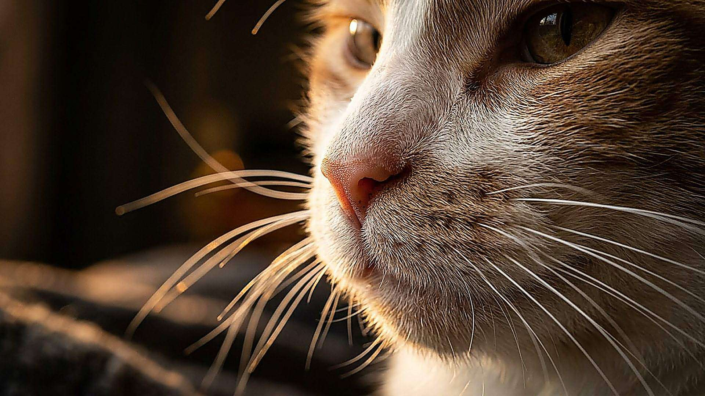
La merveille
Les moustaches du chat domestique (Felis catus) sont des vibrisses : de longs poils sensibles au contact par l’intermédiaire des récepteurs situés à leur base. Elles s’amincissent généralement vers la pointe et aident le chat à explorer son environnement proche.
Comment ça marche
Lorsqu’une vibrisse touche un objet, elle se courbe et transmet une force au follicule riche en récepteurs mécaniques. En 2010, des chercheurs ont étudié l’effilement chez neuf espèces de mammifères et la déformation de vibrisses isolées de félidés. Leur modèle suggère des avantages de la forme effilée par rapport à un cylindre hypothétique ; il ne démontre pas une forme optimale universelle.
- 9 espèces de mammifères dont les vibrisses ont été caractérisées dans l’étude
- 10 × rapport approximatif base-pointe observé dans l’échantillon, variable selon les vibrisses
- 2 010 année de publication de l’étude sur l’effilement
Ce que l'homme en tire
Des équipes développent des vibrisses artificielles souples pour explorer le contact et la forme d’objets. Ces dispositifs sont des prototypes : le modèle mécanique simplifié n’équivaut pas au système sensoriel complet d’un chat.
Statut : PROTOTYPE
Le saviez-vous ?
Est-ce la moustache elle-même qui ressent le contact ?
Le poil transmet les mouvements et les forces ; les récepteurs sensibles sont situés dans les tissus du follicule à sa base.
Question honnête
La forme et l’état de la pointe varient, notamment avec l’usure. Les avantages proposés pour l’effilement reposent sur des mesures et des modèles ; ils ne prouvent pas que toutes les vibrisses sont identiques ou parfaitement optimisées.
Réflexion
Job 12:7-8
Un contact léger peut devenir une information grâce à un follicule sensible.
Sources
- Williams C. M. et Kramer E. M. (2010), « The Advantages of a Tapered Whisker », PLOS ONE 5:e8806 — DOI 10.1371/journal.pone.0008806
Voir aussi
La langue qui démêle et humidifie le pelage Le chien qui échantillonne les odeurs
La fourrure qui garde l'air
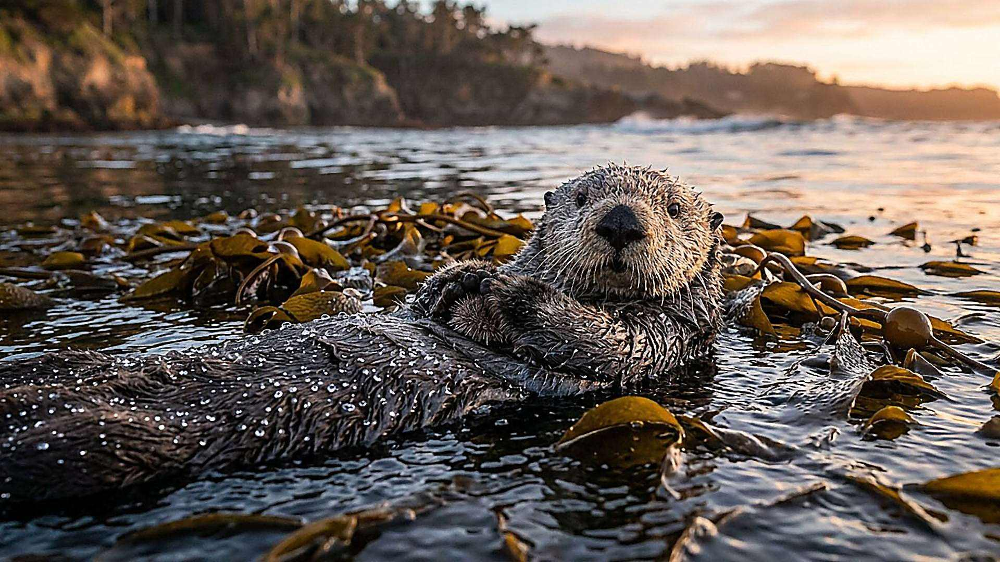
La merveille
La loutre de mer (Enhydra lutris) conserve sa chaleur dans l’eau froide grâce notamment à sa fourrure dense, qui retient de l’air près de la peau. Le pétrole peut désorganiser ce pelage et accroître le risque d’hypothermie.
Comment ça marche
Le pelage retient une couche d’air isolante que le toilettage contribue à entretenir. En 2023, des chercheurs ont mesuré la résistance thermique d’échantillons de fourrure de loutres de mer de Californie, à différents âges, dans l’air, dans l’eau et après imprégnation de pétrole. Les échantillons souillés isolaient moins bien. Un modèle géométrique estime ensuite les pertes de chaleur à l’échelle du corps.
- 6 classes d’âge comparées dans cette étude
- 3 conditions de traitement : air, eau et pétrole brut
- 2 023 année de publication de l’étude
Ce que l'homme en tire
Comprendre la perte d’isolation aide à évaluer les risques des marées noires et la vulnérabilité des loutres. Des textiles retenant de l’air explorent un principe physique voisin, sans que cette étude démontre à elle seule une application industrielle.
Statut : RECHERCHE
Le saviez-vous ?
Pourquoi la loutre entretient-elle si souvent sa fourrure ?
Le toilettage aide à nettoyer et aérer le pelage, ainsi qu’à maintenir la couche d’air qui participe à l’isolation.
Question honnête
Les mesures concernent des échantillons de fourrure, et les pertes de chaleur du corps entier sont estimées par un modèle simplifié. Une fourrure contaminée augmente le risque d’hypothermie, sans que toute exposition entraîne nécessairement la mort.
Réflexion
Job 12:7-8
Une fourrure dense aide cet animal à conserver sa chaleur dans l’océan.
Sources
- Riordan K., Thometz N.M., Batac F.I., Nicholson T.E., Liwanag H.E.M. (2023), « Effects of ontogeny and oiling on the thermal function of southern sea otter (Enhydra lutris nereis) fur », Conservation Physiology — DOI 10.1093/conphys/coad095
Voir aussi
Le corps qui descend sous zéro Le cheval qui se repose debout
La gouttière qui trie les liquides
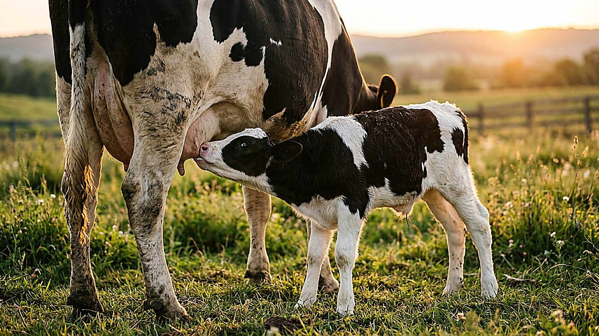
La merveille
Chez le jeune veau, le réflexe de la gouttière œsophagienne dirige généralement le lait tété vers la caillette plutôt que vers le rumen. L’eau et les aliments solides peuvent contribuer au développement du rumen, mais leur trajet dépend des conditions de prise.
Comment ça marche
Lors de la tétée, les replis de la gouttière se rapprochent et forment un passage qui permet au lait de contourner les préestomacs. Ce réflexe dépend notamment des stimuli et des habitudes alimentaires : de l’eau peut aussi emprunter ce trajet dans certaines conditions.
- 3 préestomacs généralement contournés par le lait tété
- 1 957 année de l’étude des facteurs influençant le réflexe
- 2 modes d’alimentation étudiés : tétée et autres prises
Ce que l'homme en tire
Conduite d'élevage des jeunes ruminants (choix tétine/seau, température du lait) : pratique d'élevage courante.
Statut : EN PRODUCTION
Le saviez-vous ?
La gouttière distingue-t-elle toujours le lait de l’eau ?
Non. Le contexte de prise, la succion et les habitudes du veau influencent aussi la fermeture du passage.
Question honnête
La fermeture du réflexe n’est pas garantie dans toutes les conditions d’alimentation ; le rumen du nouveau-né se développe progressivement.
Réflexion
Job 12:7-8
Un réflexe oriente le lait pendant la tétée.
Sources
- Hegland R.B., Lambert M.R., Jacobson N.L., Payne L.C. (1957), « Effect of dietary and managemental factors on reflex closure of the esophageal groove in the dairy calf », Journal of Dairy Science 40:1107–1113 — DOI 10.3168/jds.S0022-0302(57)94602-7
Voir aussi
Le troisième solide que le bébé ne digère pas Le barrage qui se voit de l'espace